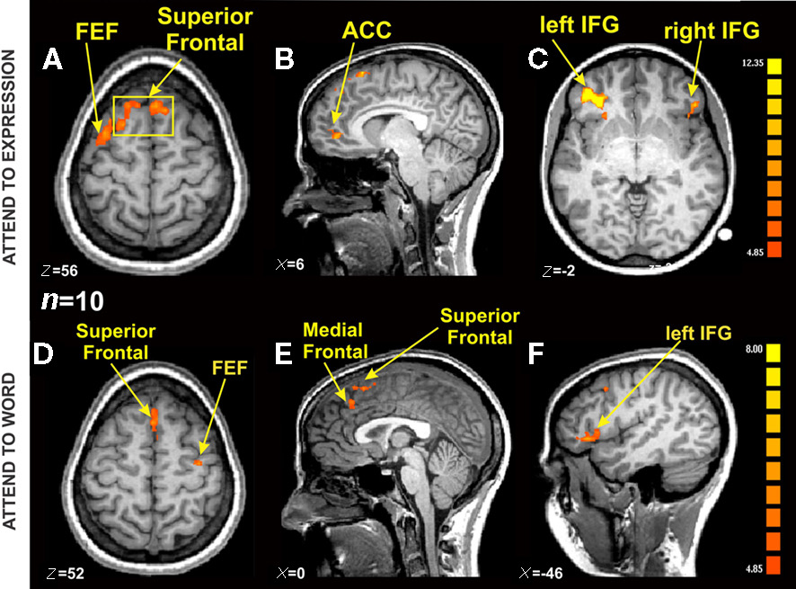

What does an fMRI actually measure?
When a headline says a brain region lit up, what was actually measured? Not thoughts, and not even electricity. Blood, measured indirectly, and a few seconds late.

You have seen the pictures. A gray brain with a glowing blob of orange and yellow, under a headline like "scientists find the brain's love center," or "this is your brain on sugar." The blob comes from a functional MRI, and the standard caption is that the region lit up.
It's one of the most misunderstood images in science. An fMRI doesn't show thoughts, and it doesn't even show the electrical activity of neurons. It shows blood, measured indirectly, and a few seconds late. Once you see what's really being measured, those headlines read very differently.
What the scanner is actually doing
Start with the machine. An MRI scanner is a very large magnet. It works by lining up the hydrogen atoms in the water in your body, knocking them out of line with radio waves, and listening to the signal they give off as they settle back. Different tissues give off slightly different signals, which is how a regular MRI builds those detailed pictures of soft tissue.
Functional MRI uses the same magnet to track one specific thing over time, called the BOLD signal. BOLD stands for blood oxygen level dependent, and that name is the whole story. The scanner isn't measuring neurons firing. It's measuring changes in the oxygen content of blood.
BOLD, which is blood and not thoughts
Here's the chain of events. When a patch of neurons gets more active, it needs more energy, so it uses more oxygen. You would expect the local oxygen to drop. Instead the brain overreacts and floods that area with fresh oxygen rich blood, more than the neurons actually used. So an active area ends up with a higher ratio of oxygenated to deoxygenated blood than a resting area.
That ratio is what the magnet can see. Oxygenated and deoxygenated hemoglobin have different magnetic properties, and deoxygenated hemoglobin distorts the magnetic field more. So when the fresh blood rushes in and the balance tips toward oxygenated blood, the local MRI signal rises a little. That tiny rise is the BOLD signal. The whole thing is a plumbing measurement. fMRI watches where the blood goes and treats that as a stand in for where the neurons were busy.
Indirect, and slow
Two things follow from this, and they're the source of most of the confusion.
First, it's indirect. The blood response is a proxy. It tracks neural activity reasonably well in most cases, which is why fMRI is useful at all, but it's one step removed. You're inferring the firing from the plumbing.
Second, it's slow. Neurons fire and reset in a few milliseconds. The blood response is sluggish by comparison. After a burst of neural activity the blood flow takes a second or two to even start changing, peaks around five or six seconds later, then takes several more seconds to fade. So fMRI is badly blurred in time. It can't tell you the millisecond order in which things happened, only that, smeared over several seconds, an area got busier. It's blurry in space too, since each three dimensional pixel, called a voxel, averages over hundreds of thousands to millions of neurons doing many different things.
The blob is a difference, not a photograph
This is the part the headlines get most wrong. The colorful blob isn't a picture of the brain working. It's the output of a statistical comparison.
A typical study scans the brain over and over while a person does two things, say looking at faces and looking at houses. Almost the entire brain shows BOLD signal the whole time, because the whole brain is alive and using blood. So researchers don't look for where there's activity. They look for where the BOLD signal was reliably higher in one condition than the other, face trials minus house trials, and they only color in the voxels where that difference clears a statistical threshold. The orange blob means this spot showed a bigger blood flow change for faces than for houses, on average, across many trials. "Lit up" is shorthand for "won a statistical contest against another condition." Change the comparison and the blob moves.
An fMRI doesn't show thoughts. It shows where the blood went, a few seconds late.
The dead salmon
How much can go wrong if you forget the statistics? In a now famous demonstration, a group of researchers led by Craig Bennett put a dead Atlantic salmon in an fMRI scanner. They showed the dead fish a series of photographs of people and asked it to judge the emotions on display. When they analyzed the data without the standard corrections, they found a small cluster of active voxels inside the dead salmon's brain.
The salmon was, of course, dead. The point wasn't that fish think. It was that an fMRI dataset has so many thousands of voxels that, by pure chance, some will look active in any comparison if you don't correct for all the tests you're running. The study won an Ig Nobel Prize and became a standard cautionary tale about false positives. Good fMRI work corrects for this. The lesson is that the picture is only as trustworthy as the statistics behind it.
What it's good for, and what it isn't
None of this means fMRI is useless. It's genuinely powerful for one main thing, finding where in the brain a given process tends to involve more activity, averaged across many trials and often many people. It mapped the broad geography of vision, language, movement, and memory in living humans without surgery, which is remarkable.
What it isn't is a mind reader, a lie detector, or a millisecond stopwatch. It can't watch a single thought in real time. It can't read out the content of what you're thinking, whatever the headlines say. And a region showing more blood flow during a task doesn't prove that region causes the behavior, only that it was along for the ride. Those are the claims to be skeptical of.
Why this matters
The next time you see a glowing brain under a headline about the neural basis of love, or political belief, or your phone addiction, you can translate it. What the scientists most likely found is that one small region showed a slightly larger blood flow difference between two conditions, in a signal that lags real activity by several seconds, averaged over millions of neurons and many people, and only after they drew a statistical line somewhere.
That's still real, and often interesting. But it's a long way from the brain lighting up with love. Knowing what the measurement actually is turns a magic picture back into what it really is, a clever, blurry, indirect map of blood. Worth keeping in mind every time one of these images shows up in your feed.